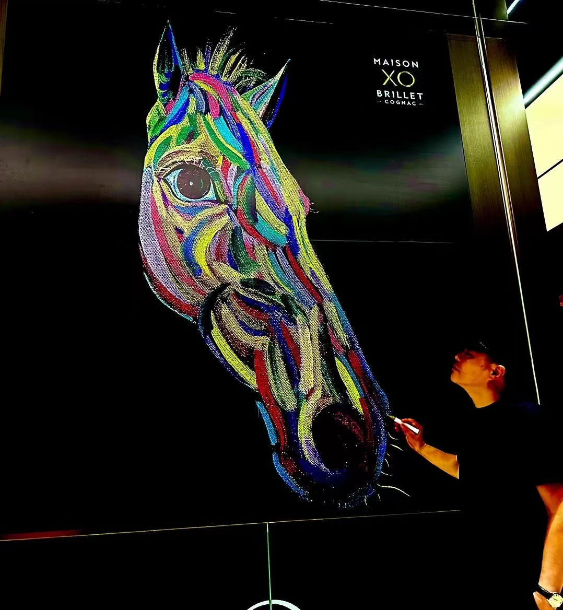
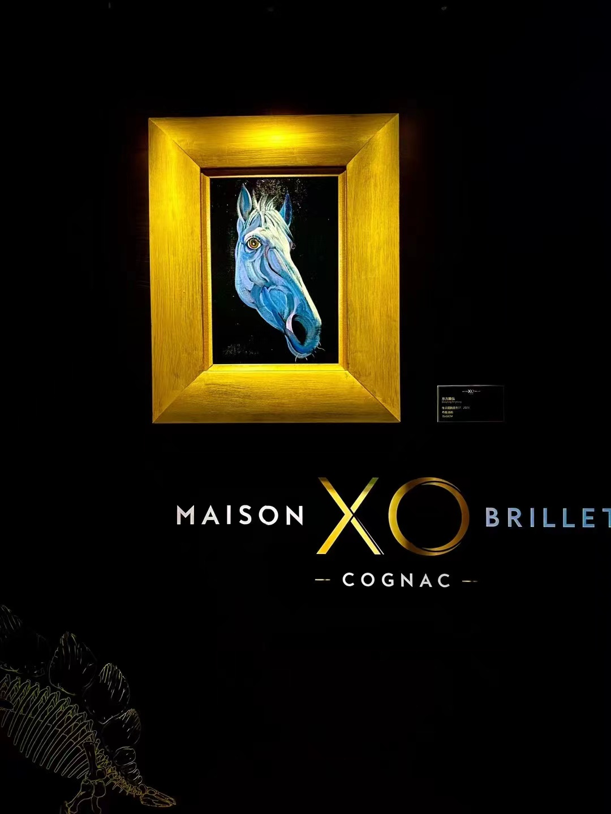
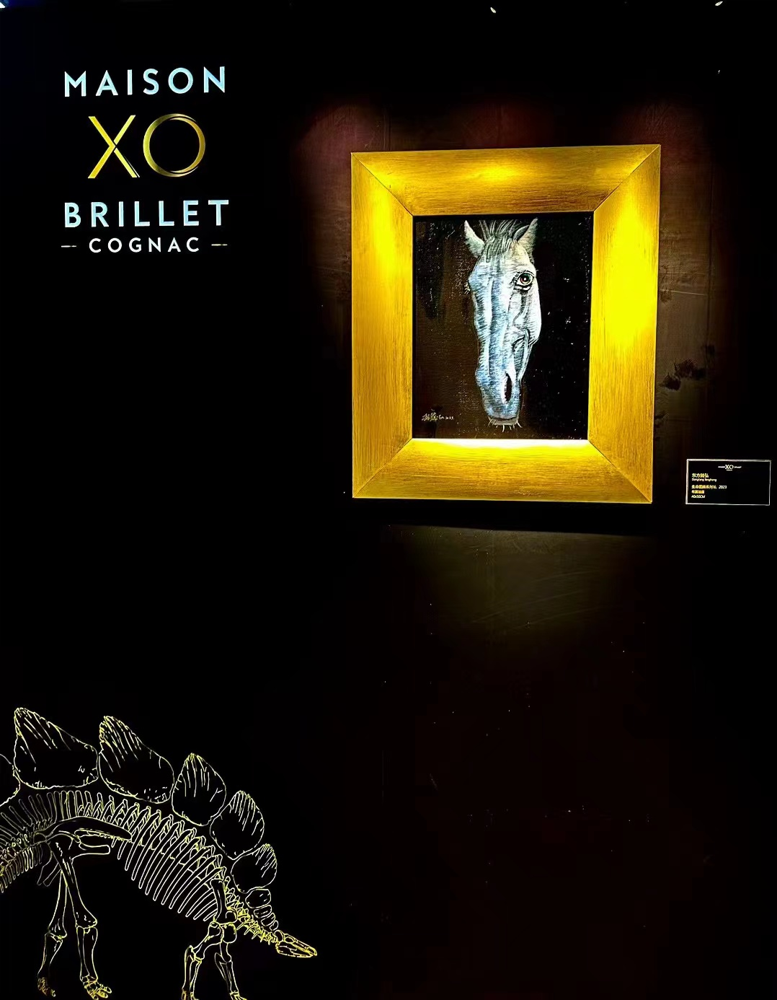
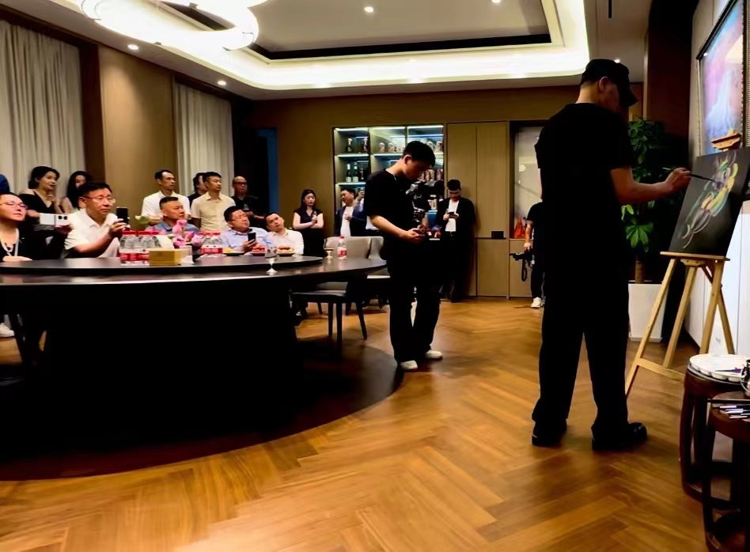
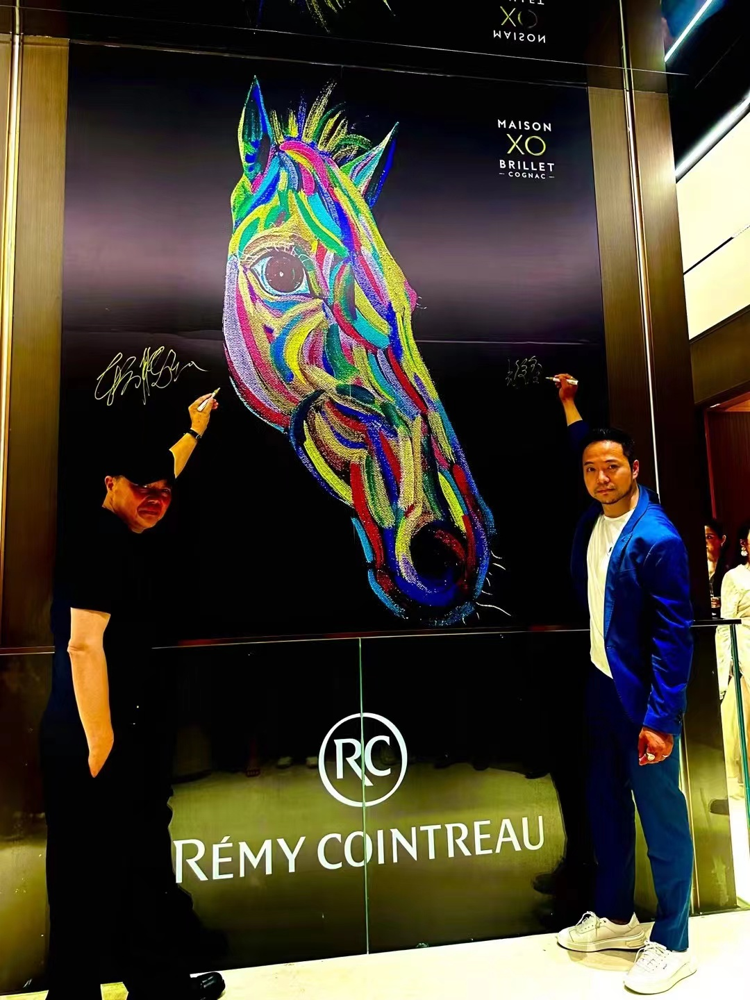
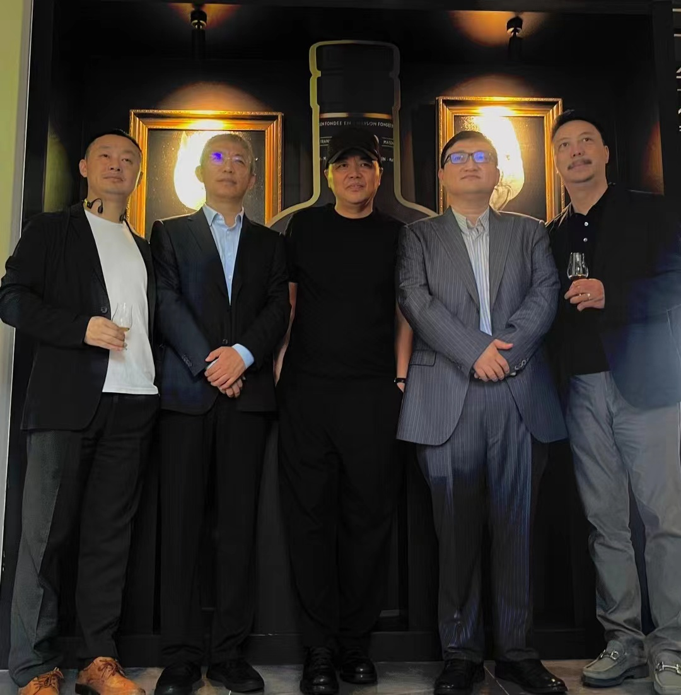

Ze Yu proporciona una crítica profunda del mundo artístico de Dongfang Tenghong: su caballo blanco no es meramente un caballo, sino una encarnación de la esencia espiritual—silencioso, sagrado, trascendiendo el tiempo. Él utiliza técnicas realistas para representar escenas surreales, dejando a los espectadores suspendidos entre la creencia y la incredulidad. Sus pinturas son silenciosas, pero contienen el poder del trueno. Este poder no proviene del impacto externo, sino de la concentración interior.
Los críticos reconocen que las obras de Dongfang Tenghong son puras pero misteriosas, austeras pero elegantes, ya no meramente reflejando paisajes externos sino persiguiendo una convergencia armoniosa de la mente y la naturaleza. A través de sus representaciones de caballos y monjes, él crea relaciones misteriosas que exteriorizan su mundo psicológico—buscando tranquilidad y sublimidad trascendiendo preocupaciones mundanas.
La imagen del caballo apareció inicialmente en las obras de Dongfang Tenghong como mero adorno, pero conforme su representación de caballos se volvió cada vez más refinada, la forma equina gradualmente se movió de la periferia de la pintura a su centro, convirtiéndose en el tema principal de su expresión artística. Los caballos en las pinturas de Dongfang Tenghong simbolizan un espíritu de perseverancia y progreso, destacando la independencia en nuestra ruidosa sociedad moderna.
Como compañero de clase de He Duoling y Zhou Chunya en el Instituto de Bellas Artes de Sichuan, Dongfang Tenghong tuvo obras publicadas en revistas profesionales ya a finales de los años 70 y participó repetidamente en varias exposiciones nacionales de arte. En 1985, participó en la influyente "Exposición Nacional de Arte de la Juventud Avanzada China" y ganó el Premio de Bronce. El profesor Wu Yongqiang proporciona un análisis académico de la exploración artística de más de cuarenta años de Dongfang Tenghong y su indagación espiritual en el tema de los "caballos".
Dongfang Tenghong es un artista que ha experimentado una transformación de la realidad externa al mundo espiritual interior. Sus obras tempranas expresan un compromiso directo con la vida social, mientras que sus obras posteriores revelan una búsqueda espiritual trascendente con características simbolistas y surrealistas. Su trabajo creativo abarca casi treinta años de la historia del arte contemporáneo chino.
La Revista de Arte Moderno publicó un artículo académico profundo que sistemáticamente explica cómo los símbolos visuales en las pinturas de Dongfang Tenghong—caballos blancos, monjes rojos, campos verdes, luz celestial, templos—y sus combinaciones de colores infunden exitosamente el mundo surreal con significados de ciclos celestiales, circulación espacio-temporal, la esencia de la vida, y la interconexión de la vida y la muerte.
En las pinturas de Dongfang Tenghong, los caballos blancos sirven tanto como un repositorio de conexión kármica como un catalizador espiritual para introducir perspectivas adquiridas de sus viajes a regiones tibetanas, particularmente su contemplación del budismo tibetano. Los caballos completamente blancos aparecen libremente como seres solitarios o colectivos, ambientados contra fondos de montañas nevadas, praderas, playas, páramos, humedales, así como tiendas de fieltro, pastos, casas antiguas, lamas, pagodas budistas, banderas de oración y piedras mani.
Tian Xuzhong, curador principal de la Exposición de Documentación de Arte de Sichuan de Cien Años y artista de primera clase nacional, señala que Dongfang Tenghong es un raro artista contemporáneo chino que fusiona Oriente y Occidente como pintor surrealista, y es un pionero y fundador en la expresión del misticismo oriental. Sus pinturas por primera vez unen realismo, romanticismo y el espíritu cultural del misticismo, proporcionando formas visuales enteramente nuevas para que la pintura al óleo china llegue al mundo.
Vicepresidente de la Cámara de Industria Cultural de Sichuan y Director Ejecutivo del Instituto de Investigación de Pintura al Óleo Contemporáneo de Sichuan, Dongfang Tenghong, discute su mundo creativo—un reino espiritual tranquilo. En esta entrevista, comparte su viaje del realismo a la imagería mística y su profunda contemplación de la estética oriental.
La presentación de pinturas de Dongfang Tenghong y la discusión de mesa redonda "Integración de Recursos Culturales de Alto Nivel en la Industria de Educación Estética" exploraron su lenguaje artístico, el caballo como expresión simbólica, y cómo los recursos culturales de alto nivel se integran dentro de la industria de educación estética.
Pintura al Óleo Contemporánea · Wu Yongqiang · 2023
En abril de 2023, Dongfang Tenghong fue invitado a participar en la "Exposición de Arte Contemporáneo Temperatura" celebrada en el Salón Carrusel del Louvre en París, Francia. El profesor Wu Yongqiang escribió que las obras de Dongfang Tenghong, centradas en el calor interior del arte y la experiencia de vida, muestran el encanto único de la imagería mística oriental en el escenario internacional.
Palazzo della Accademia di Roma da Vinci Museum · 2022
En noviembre de 2022, "Mirada SPERANZA - Exposición de Arte Contemporáneo Chino" fue celebrada en el Palazzo della Accademia di Roma da Vinci Museum. Dongfang Tenghong fue invitado a exhibir, trayendo la Pintura de Imagería Mística Oriental a los salones sagrados del arte europeo, dialogando con audiencias italianas a través de diálogo visual transcultural con su imagería surrealista de corceles blancos y monjes.
La Quinta Bienal de Arte Asiático fue celebrada en el Museo de Arte Asiático de Fukuoka en Japón, curada por el exdirector y crítico Koichi Yasunaga. El Museo de Arte Asiático de Fukuoka es el único museo del mundo dedicado a recopilar y exhibir sistemáticamente arte asiático moderno y contemporáneo. Dongfang Tenghong fue invitado a exhibir su serie de "Pintura de Imagería Mística Oriental". La exposición recibió apoyo del Consulado General de la República Popular China en Fukuoka.
Una interpretación profunda de cómo Dongfang Tenghong construye un sistema de imagería oriental único a través de la pintura al óleo. Desde la serie Highland hasta la serie Life Totem, sus obras reinterpretan la esencia espiritual de la estética oriental dentro del contexto contemporáneo, y sus pinturas son coleccionadas por numerosos museos, galerías e instituciones internacionales.
En esta entrevista profunda, Dongfang Tenghong discute su comprensión de la creación artística: el arte es la expresión sincera de uno mismo. Reflexiona sobre su viaje educativo desde la Escuela de Arte del Ejército hasta Florencia, y cómo encontró su lenguaje artístico único en la colisión de las tradiciones artísticas de Oriente y Occidente.
En 2020, "Indagación de Montaña y Agua - Palacio como Hogar: Primera Exposición de Arte Contemporáneo de Diseño Kusugawa" fue celebrada en Chengdu, explorando la integración profunda del arte y el diseño de espacios. Dongfang Tenghong fue invitado a exhibir, presentando su serie de "Pintura de Imagería Mística Oriental" para demostrar la aplicación del arte en la estética residencial contemporánea.
La columna de maestros de la Escuela de Pintura Ba Shu revisa exhaustivamente la vida artística de Dongfang Tenghong—desde ganar el Premio de Bronce en la "Exposición Nacional de Arte de la Juventud Avanzada China" en 1985, hasta estudiar en la Academia Clásica de Arte de Florencia, hasta crear la "Pintura de Imagería Mística Oriental". Presenta reseñas profundas de maestros que incluyen Gao Xiaohua, Tian Xuzhong y Ma Yadong.
El Grupo Cultural de Wanda, por primera vez, unió a seis artistas renombrados—Gao Xiaohua, Ai Xuan, Leng Jun, Mi Jinming, Dongfang Tenghong y Ma Qianxiao—en el Cine Wanda Jinjing de Chengdu para lanzar la iniciativa "Compartir Arte Chino con el Público". Dongfang Tenghong participó como representante de la "Pintura de Imagería Mística Oriental China", marcando un nuevo hito en llevar arte de alto nivel a la vida de las personas.
La pintura al óleo "Monje Errante" de Dongfang Tenghong fue seleccionada como un regalo oficial por el Comité Olímpico de Beijing 2008, hecha en placas colgantes de cerámica regaladas a oficiales del Comité Olímpico Internacional y representantes de naciones participantes, convirtiéndose en un testigo importante del intercambio cultural olímpico.
En 1985, Dongfang Tenghong participó en la influyente "Exposición Nacional de Arte de la Juventud Avanzada China" y ganó el Premio de Bronce, un hito importante en su carrera artística temprana, marcando el primer reconocimiento académico nacional de su obra.
Galería de Eventos · Exposición de Apreciación de Arte Rémy Martin XO
2024 · Dongfang Tenghong × Maison XO Brillet · Hangzhou
En 2024, Dongfang Tenghong y Maison XO Brillet, una subsidiaria del Grupo Francés Rémy Cointreau, celebraron conjuntamente una exposición de apreciación de arte, mezclando la Pintura de Imagería Mística Oriental con la cultura del Coñac Premium Francés para un diálogo inmersivo entre arte y gusto.

Mural Colorido de Tótem de Vida a Gran Escala × Maison XO Brillet

Serie de Corcel Blanco · Exhibición de Marco Dorado

Serie de Corcel Blanco · Exhibición de Asociación de Marca

Conferencia Artística y Apreciación en el Lugar

Artista y Socio · Rémy Cointreau

Foto de Invitado de la Exposición de Apreciación
Evaluaciones de Maestros
Apreciaciones de arte de pintores y críticos renombrados
Dongfang Tenghong tiene un "corazón budista" y un "corazón infantil". Sus pinturas tienen una "calidad de pátina", como el lustre cálido que se forma en la porcelana antigua después de ser pulida por el tiempo—no una luz aguda o deslumbrante, sino una luz suave, restringida, históricamente matizada. No sigue tendencias, pero persiste en su mundo estético único.
Las obras de Dongfang Tenghong persiguen un reino que trasciende preocupaciones mundanas, con una solemnidad religiosa y dignidad emanando de sus pinturas. Sus imágenes son simples pero misteriosas, austeras pero elegantes, encarnando una filosofía de renuncia al mundo.
Independientemente de la preferencia, hay una especie de sinceridad en estas pinturas, que es rara hoy en día.
Dongfang Tenghong es un artista lleno de pasión e idealismo. Hay un ansia por mundos lejanos en sus pinturas, un romanticismo que no está dispuesto a ser limitado por la realidad.
A través de caballos y monjes como sujetos, Dongfang Tenghong crea relaciones misteriosas, y su imagería narrativa simbólica y misteriosa se ha convertido en su lenguaje artístico más distintivo.
Las obras de Dongfang Tenghong merecen ser coleccionadas, con gusto refinado. Sus pinturas tienen una cualidad especial raramente vista en pintura al óleo contemporánea.
Las pinturas de Dongfang Tenghong exhiben las características duales del simbolismo y el surrealismo, infundiendo la esencia espiritual oriental en el lenguaje de pintura al óleo occidental, formando la "Imagería Mística Oriental" única.
El arte de Dongfang Tenghong es una exploración espiritual, intentando construir a través de sus pinturas un santuario espiritual—donde hay caballos blancos, monjes, montañas nevadas, y la tranquilidad y solemnidad originales de la humanidad.
El trabajo creativo de Dongfang Tenghong abarca casi tres décadas de la historia del arte contemporáneo chino, desde arte de heridas hasta arte de vanguardia, desde realismo cínico hasta neoexpresionismo, buscando constantemente su posicionamiento en medio del cambio.
Hay algo divino en las pinturas de Dongfang Tenghong, no divino en un sentido religioso, sino un sentido de sublimidad y reverencia cuando la humanidad enfrenta la naturaleza y el destino.
El dominio de Dongfang Tenghong del espacio y el color es digno de elogio. Sus espacios pictóricos son expansivos y profundos, los colores son establecidos y poderosos, mostrando un gusto artístico excepcional.
Las obras de Dongfang Tenghong poseen trascendencia; él no está contento meramente retratando la superficie de la realidad, sino que busca llegar a algo más esencial y eterno—un reino espiritual.
Identidad del Artista
Títulos primarios y certificaciones académicas
Fundador de la "Pintura de Imagería Mística Oriental"
Presidente de la Academia de Pintura de Arte Oriental de Sichuan
Director Ejecutivo del Instituto de Pintura al Óleo Contemporáneo de Sichuan
Vicepresidente de la Asociación de Pintura al Óleo de Sichuan
Vicedirector, Comité de Pintura al Óleo, Asociación de Artistas de Sichuan
Director Ejecutivo de la Academia de Pintura de Tinta Nueva Moderna de Sichuan
Artista Senior, Museo de Sichuan
Miembro de la Asociación de Artistas Chinos
Vicepresidenta de la Cámara de Industria Cultural de Sichuan